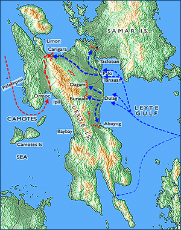

|
j
a v a s c r i p t |
November 23, 1944

Leyte
Tribune: "Encirclement of foe troops in Carigara area tightened — enemy's escape route cut." The 24th Division has been "totally emasculated," and the 32nd Division, which came to its aid, faces "the same fate." But it's the Japanese who are getting it in the Leyte showdown. The latest communiqué from Nimitz mentions an attack on some 40 barges on the beaches south of Ormoc. On the ground, Limon, "the northern anchor of the Yamashita line," as MacArthur calls it, is still the center of heavy fighting, with the Japanese 1st Division drawing heavily on reserves to hold it. La Vanguardia: "Big drop in the price of rice and corn." The Economic Division of the Metropolitan Constabulary takes a bow (which rightfully belongs to Newton) because rice, which reached P350 a ganta (P8,000 a sack!) declined to P260 a ganta yesterday, while corn, which had also topped P300 a ganta, had declined to around P170. The weakness is expected to continue because the harvest will begin soon and peak in January. Incidentally, a few miles out of Manila in Tutuban, rice sells for P260 a ganta versus P295 in San Juan. Transportation being what it is — or isn't — most people in San Juan buy locally. A carretela ride from Quezon Bridge to Santa Mesa now costs P25 (P10 and P15 in relays) versus 8 centavos before the war. A can of Purico that cost P6 to P7 prewar now costs P5,000. An individual, small, local Lemon Drop of pure synthetic origin will cost you P1.75. It melts away in two minutes flat. |
|
|
|
|